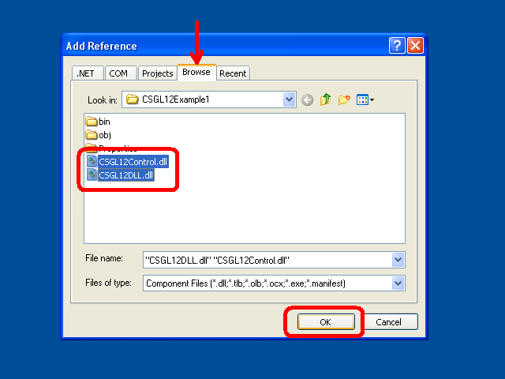
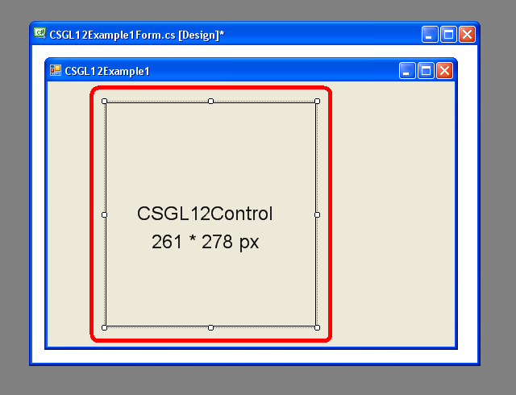

C# OpenGL接口
為Windows作業系統
Colin Fahey

CSGL12Control的Form ，顯示出“分形”像素著色器程序，並GDI+繪圖複製到紋理

兩個CSGL12Control情況的Form ，顯示像素著色器程序和紋理

三維頭像的漫遊在台式電腦和可移動的光標
1. 軟件
2. 所有C#計算機代碼的C# OpenGL接口（ CSGL12 ）是在“公共領域”
我寫的所有C#計算機代碼的C# OpenGL接口（ CSGL12 ） 。
我宣布所有C#計算機代碼的C# OpenGL接口（ CSGL12 ）是在“公共領域” 。
因此，計算機代碼可以用於任何目的（商業或私人） ，不用付錢，沒有任何限制，沒有義務，不承認原作者。
代碼可以被修改，或部分重複使用，沒有任何限制，也沒有義務，不承認原作者。
例子程序，包括少量的計算機代碼（具體來說， “shader計算機代碼）所寫的其他人。” 這些代碼不屬於自己的界面，可trivially刪除。 這些代碼只是顯示簡單的使用界面創建和使用“shader”程序。
3. 導言
“CSGL12”是一家集C#計算機代碼文件，實現一個接口的OpenGL圖形庫（包括所有OpenGL延長至2007年）為Windows操作系統。
計算機代碼的C#中的文件“CSGL12”收集可以很容易地添加OpenGL繪圖軟件的任何C# / .NET與“Form” （一個實例“System.Windows.Forms.Form” ） 。
收集的“CSGL12”計算機代碼文件包含一個名為“CSGL12Control.cs” ，它定義了一類名為“CSGL12Control” ，來自“System.Windows.Forms.Control” 。 每個實例“CSGL12Control”代表一個獨立的OpenGL繪圖區。 這是很容易的添加多個實例CSGL12Control到Form （一個實例System.Windows.Forms.Form ） 。
4. 特點和要求的“CSGL12”
該代碼是唯一的Windows操作系統支持.NET 2.0 Framework (Windows 2000, Windows XP, Windows Vista, Windows 7)
該代碼可以編譯使用“Microsoft Visual C# 2008 Express Edition” （免費的編譯器） ，或類似的C#編譯。
守則規定正在建造的“[X] Allow unsafe code”建設的選擇，以便優化圖像數據複製功能都可以使用。 如果你是一個專家C#編程，你將能夠很容易地確定部分C#代碼，需要“unsafe”選擇和禁用如果希望或要求。 圖像數據複製是指10倍的速度比使用“unsafe”代碼的替代，這就是為什麼這樣的代碼的使用。 如果您建立一個DLL ，其中包含所有的“unsafe”代碼，然後一個項目，使用該DLL不需要正在修建的“unsafe”選項，這樣您就可以推斷，如果沒有“unsafe”選擇一個項目，並不意味著任何額外安全（因為許多DLL文件用於含蓄或明確的計劃包含“不安全的”代碼） 。
該代碼可以編譯和使用的下列任何一種：
Microsoft Visual C# 2008 Express Edition
Microsoft Visual Studio 2008
Microsoft .NET 3.5 SDK
SharpDevelop
Mono Project
代碼提供最OpenGL擴展（通過一年2007 ） ，包括“vertex shaders”和“pixel shaders” 。
該法規定1570有關職能OpenGL ：
336 GL functions
51 GLU functions
19 WGL functions
1164 extensions
代碼提供了一些替代變異1570功能，不同的參數類型，以方便使用。
代碼定義超過3244常數OpenGL 。
該代碼可以有多個OpenGL繪製背景下，所有動畫，獨立於任何“Form” 。
點擊“CSGL12Control”給它“投入的重點” ，使隨後的鍵盤和鼠標滾輪的投入。鼠標點擊次數和運動時，收到光標的矩形區域內的一個實例“CSGL12Control” 。
包括職能的代碼演示如何做一些共同OpenGL任務C#和.NET 。
代碼列出了所有OpenGL常數和職能按字母順序排列在“class GL”在“GL.cs” ，因此很容易，以確定是否任何常數或功能缺失（這是不可能的，除了延長一年後通過2007 ） 。
示例程序顯示如何做GDI+即將Bitmap ，然後如何複製的Bitmap的OpenGL紋理。
這使文本和其他GDI+繪圖功能作出貢獻一OpenGL現場。
該GDI+ Bitmap可以更新和上傳到OpenGL紋理作為往往因為一旦百分之OpenGL框架。
示例程序顯示如何選擇從幾個不同的“pixel shader programs”而程序運行。
示例程序顯示如何撰寫OpenGL緩衝器圖像文件（ JPG ， BMP ， GIF ， PNG ） 。
新聞Shift + 0 （移零）寫入OpenGL緩衝區圖像文件。
示例代碼顯示如何編譯“GL.cs”在一個DLL文件，然後補充說DLL文件到另一個項目中，可以防止Microsoft代碼編輯器（例如， Microsoft Visual C# 2008 Express Edition等等） “IntelliSense” （上下文相關的代碼完成）成為經常和堅持響應（多次暫停對許多秒鐘，使編輯器完全無法使用） 。 在該文件“GL.cs”直接包括在任何項目正在編輯的Microsoft代碼編輯器是不切合實際，除非一個人願意忍受緩慢的編輯器。 這個問題已經影響到Microsoft Visual Studio 2003 ， 2005 ， 2008 ，並可能會影響到2010版本了。
示例代碼演示了使用多個實例“CSGL12Control”的“Form” 。
該代碼示例包括代碼作出3D “化身”的漫遊在桌面的Windows 。
5. 示例程序中包含的“CSGL12”
5.1 “CSGL12DLL”
該項目命名為“CSGL12DLL”生產DLL檔名為“CSGL12DLL.dll”其中載“class GL” （界定的C#文件“GL.cs” ） 。
把“class GL”在一個DLL文件，然後使用該DLL在其他項目使用“class GL” ，有助於避免極端的問題，所有Microsoft代碼編輯與IntelliSense功能。 使用C#文件GL.cs中直接將一個項目造成任何Microsoft代碼編輯器的功能與IntelliSense成為完全響應和使用幾乎不斷由於效率低下， IntelliSense功能（和一個事實，即IntelliSense顯然塊主程序線程的編輯器） 。
如果您使用的是C#代碼編輯器不產生Microsoft （例如， “SharpDevelop” ， “MonoDevelop”等） ，然後您只需包括檔案“GL.cs”直接在您的項目，你也不可能獲得任何好處使用“CSGL12DLL.dll” 。
5.2 “CSGL12Control”
該項目命名為“CSGL12Control”生產DLL檔名為“CSGL12Control.dll”其中載“class CSGL12Control” （界定的C#文件“CSGL12Control.cs” ） 。
把“class CSGL12Control”在一個DLL文件，使這一“Control” （即一類來自“System.Windows.Forms.Control” ）要添加到“Toolbox”的Microsoft Visual C# 2008 Express Edition （和類似C#編輯） 。 在“CSGL12Control”在“Toolbox” ，讓一個人購買的一個實例“CSGL12Control”到“Form”在“Designer” （例如，一個人可以簡單地使用鼠標拖動選擇一個實例“CSGL12Control”從“Toolbox”到“Form” ） 。
管理對象的“CSGL12Control”一個OpenGL繪圖方面。 多個實例“CSGL12Control”可以共存的“Form” 。
5.3 “CSGL12Example1”
該項目命名為“CSGL12Example1”產生一個可執行程序文件（ EXE ）命名“CSGL12Example1.exe” 。 程序使用“CSGL12DLL.dll”和“CSGL12Control.dll”展示的一個實例CSGL12Control並提請一個立方體使用OpenGL 。
該計劃表明了使用四種不同的“pixel shaders” （ “分形” ， “磚” ， “木” ，和“漫畫” ） 。
該計劃還表明使用“GDI+” ，一個.NET繪圖圖書館，利用文字和其他形狀為“Bitmap”對象（一“GDI+”對象） ，然後複製圖像數據從“Bitmap”到“texture”在OpenGL ，從而使圖像得出由“GDI+”出現在OpenGL繪圖。 這種能力是非常有用的，因為OpenGL缺乏許多2D繪圖功能在“GDI+”和類似2D圖紙libaries 。
5.4 “CSGL12Example2”
該項目命名為“CSGL12Example2”產生一個可執行程序文件（ EXE ）命名“CSGL12Example2.exe” 。 程序使用“CSGL12DLL.dll”和“CSGL12Control.dll”顯示的兩個實例CSGL12Control ，每個提請一個立方體使用OpenGL 。
該計劃有“SplitContainer” “Control”的“Form” 。 這兩個地區的“SplitContainer”包含的一個實例CSGL12Control 。 因此，一個人可以調整的立場分歧的兩個實例CSGL12Control 。 這體現了靈活性CSGL12Control 。
其中一個實例CSGL12Control發送事件一套事件處理程序中的一個實例“CSGL12Example2Handler1.cs” ，它使用相同的代碼作為“CSGL12Example1Handler.cs”在“CSGL12Example1”例如項目。 因此，其中一個實例CSGL12Control提請立方體與一個選定“pixel shader”可從四個“pixel shaders” 。
其他實例CSGL12Control發送事件一套事件處理程序中的一個實例“CSGL12Example2Handler2.cs” ，提請立方體使用紋理圖像（或一個“棋盤”格局，如果圖像文件名為“image.jpg”沒有找到） 。
5.5 “CSGL12Avatar”
該項目命名為“CSGL12Avatar”產生一個可執行程序文件（ EXE ）命名“CSGL12Avatar.exe” 。 程序使用“CSGL12DLL.dll”和“CSGL12Control.dll”提請使用OpenGL一個立方體上“Form”沒有邊界，同顏色的透明度啟用，得出3D “頭像”說，漫遊在Windows桌面領域。
移動avatar可以點擊和拖曳到新的位置使用的光標。 雙擊avatar將使它消失。 雖然代碼只是利用一個立方體， OpenGL可用來吸引其他的東西。
多個實例“頭像”程序可以開始。 因此，許多獨立的“化身”情況下可以同時漫遊的Windows桌面。 這是有趣的。 一位專家C#程序員可以享受尋找途徑，以協調活動，許多此類“頭像”情況。
不幸的是，利率在該Window對象透明度是在屏幕上的更新是遠遠低於速度OpenGL可以借鑒。 只有更新的“化身” 10次每秒。 我不知道這是否可以得到改善。
5.6 “CSGL12BuiltExecutableExamplesForReference”
目錄命名“CSGL12BuiltExecutableExamplesForReference”包含DLL文件和EXE檔案所產生的所有例子項目。 這些文件是提供作為參考，以便文件可以立即進行測試，即使一個人沒有能力編制的各種項目從提供C#代碼。
5.7 “CSGL12UsefulCode”
目錄命名“CSGL12UsefulCode”包含C#檔案，可能是有用的人誰想做的事司空見慣繪圖行動OpenGL 。 目錄還包括DLL檔案“CSGL12DLL.dll”和“CSGL12Control.dll”方便。
代碼目錄中的定義各種class類型，如Color4f ， Vector3f ， Matrix4x4f ， Triangle ， Mesh ， ImageData ， Texture ， ShaderProgram等 該代碼是合理有效的，但代碼只是為了激發人們開發自己的實現。
6. CSGL12檔案
該“CSGL12”收集C#計算機代碼的文件包括文件顯示在下面的圖表：

該“CSGL12”收集C#計算機代碼的文件包括文件顯示在這圖。
該軟件還包括“CSGL12”項目，以創造兩個DLL文件（ “CSGL12DLL.dll”和“CSGL12Control.dll” ）中顯示圖。 這兩個DLL文件可以創造，使其更方便地創建程序，使用OpenGL ，但它也可能創造的程序只使用C#文件直接。
7. “namespace CSGL12”和“class”類型
該“CSGL12”收集C#計算機代碼文件定義“namespace CSGL12”和“class”類型顯示在下面的圖表：

該“CSGL12”收集C#計算機代碼文件定義“namespace CSGL12”和“class”類型在此圖。
一個程序，它OpenGL圖紙可以創造只用“class GL” （使用C#文件GL.cs直接，或通過使用DLL文件CSGL12DLL.dll其中還包含“class GL” ） 。 然而，使用“class CSGL12Control” （使用C#文件CSGL12Control.cs直接，或通過使用DLL文件CSGL12Control.dll其中還包含“class CSGL12Control” ）使得添加OpenGL即將Form （ System.Windows.Forms.Form ）簡單方便。
該C#班Color4f ， CSGL12Support ， ImageData ， ... ，底部的圖是只提供方便。 這些課程使之更容易創建程序，提請使用OpenGL 。 但是，您可能已經執行的類的業務在這些課程，或您可以選擇建立類似的課程，執行不同的業務或更有效率。 這些課程是作為一個特定的例子代碼的設計和實施。
8. 使用單一“CSGL12Control”的System.Windows.Forms.Form
8.1 程序結構
下面的圖表顯示了如何計劃與System.Windows.Forms.Form可以使用一個單一的“CSGL12Control”做繪圖OpenGL 。 如圖所示的各種CSGL12文件用於建設項目。

程序使用單一“CSGL12Control”的System.Windows.Forms.Form
8.2 使用Microsoft Visual C#創建計劃
(1)開始Microsoft Visual C# 。
(2)在菜單中，選擇“File” -> “New Project...” 。
(3)在“New Project”對話框中，選擇“Windows Forms Application” ，並選擇一個名稱的程序，並按下“OK” 。
(4)立即節省“Solution”選擇“File” -> “Save All” 。 一個對話框的標題“Save Project”會出現，讓您設置項目名稱，目錄位置，和“解決方案”的項目名稱。 記住的目錄位置，以便您準備下一指示。 按“Save”按鈕，保存該項目。
(5)複製所有文件的目錄“CSGL12UsefulCode”在“CSGL12”軟件的目錄下的源代碼文件的新項目（即目錄文件“Form1.cs” ， “Form1.Designer.cs” ， “Program.cs”等） ，例如，該文件“CSGL12DLL.dll” ， “CSGL12Control.dll” ， “Color4f.cs” ， “CSGL12Support.cs”等，同時新的項目文件“Form1.cs”等
(6)在Microsoft Visual C# ，添加“CSGL12” C#文件到項目中。 在菜單中，選擇“Project” -> “Add Existing Item...” ，並在“Add Existing Item”對話框中，選擇所有C#文件從CSGL12軟件（ “Color4f.cs” ， “CSGL12Support.cs” ， “ImageData.cs” ， ...).
(7)在Microsoft Visual C# ，添加“引用”的DLL文件“CSGL12DLL.dll”和“CSGL12Control.dll” 。 在菜單中，選擇“Project” -> “Add Reference...” ，並在“Add Reference”對話框中，選擇“Browse”標籤，並選擇文件“CSGL12DLL.dll”和“CSGL12Control.dll”從項目源文件的目錄，並按下“OK” 。
(8)在Microsoft Visual C# ，添加“CSGL12Control”的“Toolbox” 。 在菜單中，選擇“Tools” -> “Choose Toolbox Items...” 。 在“Choose Toolbox Items”對話框中，按下“Browse...”按鈕，並轉到項目目錄的源代碼文件，並選擇“CSGL12Control.dll” 。 按“OK”按鈕。
(9)在Microsoft Visual C# ，查看“Toolbox” 。 在菜單中，選擇“View” -> “Toolbox” 。 在“Toolbox” ，去節命名“General” ，並找到了這個項目命名為“CSGL12Control” 。 使用光標，按一下該項目命名為“CSGL12Control”和將其拖放到“Form”在“Design”觀點。
(10)在Microsoft Visual C# ，在“Form” “Design”認為，移動“CSGL12Control”例如對“Form”和調整其寬度和高度。 在“Properties”小組，確定了“Anchor”價值包括“Top, Bottom, Left, Right”如果你想控制改變大小根據變化的程序窗口的大小。
(11)在Microsoft Visual C# ，更改項目內容，以便它能夠使用“unsafe”代碼。 在菜單中，選擇“Project” -> “[project] Properties...” 。 選擇對話框中，選擇標籤命名“Build” ，並選中複選框命名“[X] Allow unsafe code” 。 關閉項目屬性對話框。
(12)在Microsoft Visual C# ，增加一個新C#文件到項目中。 在菜單中，選擇“Project” -> “Add New Item...” 。 在對話框中命名“Add New Item” ，選擇模板命名“Class” ，並選擇新的名稱類類型，如“CSGL12MyHandler.cs” ，然後按“Add”按鈕。 看看例如項目命名“CSGL12Example1” ，在同名的文件“CSGL12Example1Handler.cs” ，作為一個例子，如何代碼“CSGL12MyHandler.cs”應當書面。
(13)在Microsoft Visual C# ，在“Solution Explorer” ，點擊“Form1” 。 在菜單中，選擇“View” -> “Code” （或按F7 ，或右鍵單擊“Form1”並選擇“View Code” 。 中的代碼文件“Form1.cs”將出現在編輯器。 修改代碼中的文件“Form1.cs”類似的代碼文件中的“CSGL12Example1Form.cs”項目“CSGL12Example1”列入“CSGL12”軟件。 特別是，創建一個變量為一個實例類的事件處理程序（例如， “CSGL12MyHandler” ） ，然後添加方法的類實例的事件處理的各種活動的實例“CSGL12Control”的“Form” 。
(14)在Microsoft Visual C# ，編譯和執行程序。 如果你想分享的程序，您必須包括兩個DLL文件（ “CSGL12DLL.dll”和“CSGL12Control.dll” ）的可執行文件（ *.exe ） 。
如果你是一個專家C#程序員，那麼你可以不必分配DLL文件（ “CSGL12DLL.dll”和“CSGL12Control.dll” ）與您的可執行文件（ *.exe ） 。
複製文件“GL.cs” ， “CSGL12Control.cs” ，並“PrecisionTime.cs”從項目命名“CSGL12DLL”和“CSGL12Control”在“CSGL12”軟件的源代碼目錄您當前的項目。 文件添加“GL.cs” ， “CSGL12Control.cs” ，並“PrecisionTime.cs”到您的項目，使他們直接在編譯的程序。 沒有提及“CSGL12DLL.dll”和“CSGL12Control.dll”項目。
看看“CSGL12Example1”項目“CSGL12”軟件，並期待在代碼文件命名“CSGL12Example1Form.cs”和“CSGL12Example1Form.Designer.cs”看到代碼需要創建和初始化一個實例“CSGL12Control”的“Form” 。 添加類似的代碼“Form1.cs”和“Form1.Designer.cs”手動創建和初始化一個實例“CSGL12Control”您“Form” 。
這一程序是非常不方便，而且需要專門知識和認真的關注，但由此產生的可執行文件（ *.exe ）將不需要“CSGL12DLL.dll”或“CSGL12Control.dll” 。 這是非常高興能夠分享您的軟件的形式，一個可執行文件（ *.exe ） ，而不需要其他文件。
8.3 添加“引用” CSGL12DLL.dll和CSGL12Control.dll
這部分包括圖像使用Microsoft Visual C# 2008 Express Edition添加“提及” DLL文件CSGL12DLL.dll和CSGL12Control.dll到項目中。
在菜單中，選擇“Project” -> “Add Reference...” 。 或者，右鍵單擊“References”項目“Solution Explorer”小組，並選擇“Add Reference...”所示，下面的圖片。

上下文菜單的“References”項目“Solution Explorer” ，顯示“Add Reference...”選項
經過選擇“Add Reference...”選項，會出現一個對話框命名“Add Reference”將會出現。 在此對話框中，選擇“Browse”標籤，並選擇DLL檔案“CSGL12DLL.dll”和“CSGL12Control.dll”所示，下面的圖片，然後按下按鈕“OK” 。

該“Browse”標籤“Add Reference”對話框中，與DLL檔案“CSGL12DLL.dll”和“CSGL12Control.dll”同時選中
在按下按鈕“OK” ，該“Add Reference”對話框就會消失，而且DLL檔案“CSGL12DLL.dll”和“CSGL12Control.dll”將會出現在“References”科在“Solution Explorer”所示，下面的圖表。

該DLL檔案“CSGL12DLL.dll”和“CSGL12Control.dll”在“References”科在“Solution Explorer”
8.4 添加CSGL12Control的Toolbox在Microsoft Visual C# 2008 Express Edition
這部分包括圖像使用Microsoft Visual C# 2008 Express Edition添加CSGL12Control的“Toolbox”這樣一個人可以方便地添加實例CSGL12Control到“Form”在“Designer” （ Shift+F7默認情況下） 。
在菜單中，選擇“View” -> “Toolbox” 。 在“Toolbox” ，去節命名“General”所示，下面的圖片。

該“General”部分“Toolbox”
右鍵單擊內的任何地方“Toolbox” 。 選擇選項“Choose Items...”在出現的上下文菜單中所示，下面的圖片。

選擇“Choose Items...”在上下文菜單的“Toolbox”
另外，在菜單中，選擇選擇“Tools” -> “Choose Toolbox Items...” 。
該“Choose Toolbox Items”對話框中應該會出現，顯示在下面的圖片。

對話框中的“Choose Toolbox Items”
在“Choose Toolbox Items”對話框中，按下“Browse”按鈕。 在“Open”對話框中，選擇DLL文件“CSGL12Control.dll”所示，下面的圖片，然後按“OK”按鈕。

該“Open”對話框中，與DLL文件“CSGL12Control.dll”選定
項目的“CSGL12Control”現在應該出現在“Choose Toolbox Items”對話框所示，下面的圖片。 按“OK”按鈕。

該“CSGL12Control”項目現在出現在“Choose Toolbox Items”對話框
項目的“CSGL12Control”現在應該出現在“Toolbox”所示，下面的圖片。

該“CSGL12Control”項目現在出現在“Toolbox”
8.5 添加CSGL12Control到“Form”使用“Toolbox”
這部分包括圖像使用Microsoft Visual C# 2008 Express Edition增加的一個實例CSGL12Control到“Form”使用“Toolbox” 。
在菜單中，選擇“View” -> “Designer” （ Shift+F7默認情況下） 。 或者，雙擊“Form*.cs”檔案“Solution Explorer” 。 或右鍵單擊一個“Form*.cs”文件中“Solution Explorer”並選擇“View Designer” 。 使用這三個方法， “Designer”窗口為“Form”應該會出現。
在菜單中，選擇“View” -> “Toolbox” 。 在“Toolbox” ，去節命名“General” 。 一個項目名為“CSGL12Control”應該會出現有所示，下面的圖片。
該“CSGL12Control”應該已經在“Toolbox”
使用光標，按一下該項目命名為“CSGL12Control”和將其拖放到“Form”在“Designer” 。 一個實例“CSGL12Control”應該出現在“Form”顯示下面的圖片。

一個實例“CSGL12Control”的“Form”在“Designer”
在“Form” “Designer”認為，此舉的實例“CSGL12Control”的“Form”和調整其寬度和高度。
點擊實例“CSGL12Control”的“Form”以選中它。 然後，在“Properties”小組，確定了“Anchor”價值包括“Top, Bottom, Left, Right”這樣的規模“CSGL12Control”將改變響應變化的程序窗口的大小。 您也可以改變的變量名稱（即價值“(Name)” ）為實例“CSGL12Control”自動默認的（例如， “csgL12Control” ）的東西適合您的代碼（例如， “mCSGL12Control”或“mCSGL12Control1”等） 。
以下圖片顯示的“Form” “Designer”觀點和“Properties”小組。

一個實例CSGL12Control的Form在Designer ，和“Properties小組
9. 用兩個實例“CSGL12Control”的System.Windows.Forms.Form
下圖顯示一個例子，說明兩個實例“CSGL12Control”可以被添加到System.Windows.Forms.Form做繪圖OpenGL程序中。

程序使用的兩個實例“CSGL12Control”的System.Windows.Forms.Form
按照指示在上一節中添加一個實例“CSGL12Control”到“Form” 。 然後，只需拖動一個第二個實例“CSGL12Control”從“Toolbox”的“Form”添加第二“CSGL12Control” 。
每個實例“CSGL12Control”將擁有自己的變量名。 每個實例“CSGL12Control”可以有自己的相關的事件處理程序類，也可以使用不同情況下的一個單一的處理類類型。
研究項目的例子，以了解如何“CSGL12Example2”兩個實例“CSGL12Control”可以有自己的事件發送到兩個不同的情況下的自定義事件處理類具有獨特OpenGL繪圖功能。
示例程序“CSGL12Example2”了每個實例“CSGL12Control”在“SplitContainer” “Control” ，只需證明的方式之一，這些實例“CSGL12Control”都可以使用。 然而，情況不是“CSGL12Control”可以付諸直接的“Form” 。
10. 例如C#代碼“Form”同一個實例CSGL12Control
以下是完整的C#代碼檔案中所包含“CSGL12Example1Form.cs” ，這是部分例子程序“CSGL12Example1” 。
這個代碼是在這裡作為一個簡單的例子，說明一個實例CSGL12Control可以建立和使用的“Form” 。
using System;
using System.Collections.Generic;
using System.ComponentModel;
using System.Data;
using System.Drawing;
using System.Linq;
using System.Text;
using System.Windows.Forms;
using CSGL12;
namespace CSGL12Example1
{
public partial class CSGL12Example1Form : Form
{
public CSGL12Example1Handler mCSGL12Example1Handler;
private System.Windows.Forms.Timer mTimer;
public CSGL12Example1Form()
{
InitializeComponent();
mCSGL12Example1Handler = new CSGL12Example1Handler();
mCSGL12Control1.OpenGLStarted += new CSGL12Control.DelegateOpenGLStarted( mCSGL12Example1Handler.OpenGLStarted );
mCSGL12Control1.KeyDown += new KeyEventHandler(mCSGL12Example1Handler.KeyDown);
mCSGL12Control1.KeyUp += new KeyEventHandler(mCSGL12Example1Handler.KeyUp);
mCSGL12Control1.MouseDown += new MouseEventHandler(mCSGL12Example1Handler.MouseDown);
mCSGL12Control1.MouseUp += new MouseEventHandler(mCSGL12Example1Handler.MouseUp);
mCSGL12Control1.MouseMove += new MouseEventHandler(mCSGL12Example1Handler.MouseMove);
mCSGL12Control1.MouseWheel += new MouseEventHandler(mCSGL12Example1Handler.MouseWheel);
mCSGL12Control1.Paint += new PaintEventHandler(mCSGL12Example1Handler.Paint);
// Use a timer to trigger drawing at the desired frame rate.
//
// Windows timers are not very precise. Also, if we call wglSwapIntervalEXT(1)
// and we specify in the global OpenGL control panel that OpenGL drawing
// should wait for vertical sync (vsync) of the display, then the frame
// rate would be limited to 60 frames/second or 75 frames/second, for example,
// and our program would have to draw each frame in less than 1/60 seconds
// (16.6 milliseconds) or less than 1/75 seconds (13.3 milliseconds),
// otherwise the drawn frame would be forced to wait one or more full
// frame durations before appearing on the screen. Therefore, it would
// be best to have the timer interval somewhat shorter than a full frame
// interval, to ensure that even if there is a slight delay in responding
// to the timer event we will have at least one timer event per display
// frame interval.
//
// Theoretically, a timer interval of 16 milliseconds would be short enough
// to sustain a frame rate of 62.5 frames/second, and would seemingly have
// a corresponding rate sufficient to sustain 60 frames/second in the case
// of a vertical-sync limited drawing rate for OpenGL. However, in simple
// experiments on a system with a 2.5 GHz Core 2 Duo CPU with an nVidia
// GeForce 8600M GS with 512 MB, I found that a 16-millisecond Windows
// timer interval results in a 33 frames/second OpenGL frame rate (where
// vertical-sync locking is enabled, and the display refresh rate is
// 60 frames/second). So, despite theoretically being slightly more rapid
// than necessary to maintain a 60 frames/second drawing rate, a Windows
// timer with an interval of 16-milliseconds isn't quite rapid enough to
// ensure drawing soon enough to be ready for each display refresh; hence
// the rather significantly lower than desired frame rate of 33 frames/second.
//
// Here are the OpenGL drawing frame rates (limited to 60 Hz vertical sync)
// I observed on a particular computer for particular Windows timer intervals:
//
// 18-millisecond timer interval --> 31 frames/second OpenGL drawing
// 17-millisecond timer interval --> 31 frames/second OpenGL drawing
// 16-millisecond timer interval --> 33 frames/second OpenGL drawing
// 15-millisecond timer interval --> 60 frames/second OpenGL drawing
// 14-millisecond timer interval --> 60 frames/second OpenGL drawing
//
// So, it seems like choosing a Windows timer interval only a couple of
// milliseconds shorter than the theoretical 16.6 millisecond interval
// corresponding to a 60 frames/second rate is enough for this program to
// submit each new frame in time for the next display refresh.
//
// However, computers with slower CPUs or slower GPUs might benefit from
// an even shorter Windows timer interval, to ensure that drawing will
// happen soon enough for the next display refresh.
//
// Some displays are set to refresh at 75 frames/second, which corresponds
// to a frame duration of 13.3 milliseconds. We will aim for this drawing
// rate, and we will subtract a few milliseconds from the Windows timer
// interval to ensure that we receive and process the timer event soon
// enough to submit the frame in time for the next display refresh.
// Meanwhile, we will choose the Windows timer interval such that it isn't
// absurdly short, lest future faster computers actually manage to draw
// at that wasteful rate.
//
// Choosing a Windows timer interval of 10 milliseconds seems like it will
// reliably be able to trigger OpenGL frame drawing in time to keep up with
// a 75 frames/second display (13.3 millisecond frame duration), while
// only causing the OpenGL drawing to happen at a maximum rate of
// 100 frames/second in the unlikely scenario of a very fast computer
// actually being able to draw frames at that rate (given the overhead of
// C#, etc).
mTimer = new System.Windows.Forms.Timer();
mTimer.Interval = 10; // 10-millisecond interval
mTimer.Tick += new EventHandler(PrivateTimerTickEventHandler);
mTimer.Start();
// Set focus to a control so that it can immediately accept input
mCSGL12Control1.Focus();
// Also, whenever the form becomes activated, set focus to the main
// control on the form. The following sets up an event handler for
// that purpose.
this.Activated += new EventHandler(PrivateActivatedEventHandler);
// We want to preview dialog keys (most importantly, the cursor
// keys: up, down, right, left) so we can forward such events to
// the appropriate child control.
this.KeyPreview = true;
}
void PrivateTimerTickEventHandler(object sender, EventArgs e)
{
if (false == DesignMode)
{
mCSGL12Control1.Invalidate();
}
}
private void PrivateActivatedEventHandler(object sender, EventArgs e)
{
// When this form becomes activated, after some time of not
// being active, set input focus to a GL control on the form.
if (false == mCSGL12Control1.Focused)
{
mCSGL12Control1.Focus();
}
}
// Cursor keys (up,down,left,right) need to be specially captured
// and forwarded to the control.
// CAUTION: The KeyPreview property of this Form must be set to 'true'
// for the following method to be called.
protected override bool ProcessDialogKey(Keys keyData)
{
if
(
(keyData == Keys.Up)
¦¦ (keyData == Keys.Down)
¦¦ (keyData == Keys.Left)
¦¦ (keyData == Keys.Right)
)
{
KeyEventArgs e = new KeyEventArgs(keyData);
if (true == mCSGL12Control1.Focused)
{
mCSGL12Example1Handler.KeyDown(mCSGL12Control1, e);
}
else
{
// The CSGL12Control does not have focus.
// Let's simply drop the dialog key event. The user
// may have focus on a different control.
}
return (true);
}
return base.ProcessDialogKey(keyData);
}
}
}
請注意，該成員變量“mCSGL12Example1Handler”宣布提及的一個實例class命名“CSGL12Example1Handler” 。 這一類將在隨後的敘述部分。 請注意，構造“CSGL12Example1Form”增加了方法的實例“CSGL12Example1Handler”的“multicast delegates”相關的各種活動所產生的一個實例“CSGL12Control” 。 這意味著當實例“CSGL12Control”產生的各種事件，這些事件會導致各種方法的實例“CSGL12Example1Handler” （即“mCSGL12Example1Handler” ）援引。
請注意，該成員變量“mTimer”宣布提及的一個實例class命名“System.Windows.Forms.Timer” 。 這個對象是用來調用一個函數命名“PrivateTimerTickEventHandler”每10毫秒。 命名“PrivateTimerTickEventHandler”的功能要求的一種方法的實例“CSGL12Control” （即“mCSGL12Control1” ）的原因“Control”利用本身。 這是怎樣的一個實例動畫“CSGL12Control”可以在近似率。
只有部分的定義“class CSGL12Example1Form”出現在C#檔名為“CSGL12Example1Form.cs” 。 另一部分的定義“class CSGL12Example1Form”出現在C#檔名為“CSGL12Example1Form.Designer.cs” 。 雖然文件名稱相匹配的模式“*.Designer.cs”通常創建和修改只能由圖形“Form Designer”窗口的C#編輯器，還可以創建和修改等C#文件使用文本編輯器。
以下是完整的C#代碼檔案中所包含“CSGL12Example1Form.Designer.cs” ，這是部分例子程序“CSGL12Example1” 。
namespace CSGL12Example1
{
partial class CSGL12Example1Form
{
/// <summary>
/// Required designer variable.
/// </summary>
private System.ComponentModel.IContainer components = null;
/// <summary>
/// Clean up any resources being used.
/// </summary>
/// <param name="disposing">true if managed resources should be disposed; otherwise, false.</param>
protected override void Dispose(bool disposing)
{
if (disposing && (components != null))
{
components.Dispose();
}
base.Dispose(disposing);
}
#region Windows Form Designer generated code
/// <summary>
/// Required method for Designer support - do not modify
/// the contents of this method with the code editor.
/// </summary>
private void InitializeComponent()
{
this.mCSGL12Control1 = new CSGL12.CSGL12Control();
this.SuspendLayout();
//
// mCSGL12Control1
//
this.mCSGL12Control1.Anchor = ((System.Windows.Forms.AnchorStyles)
((((System.Windows.Forms.AnchorStyles.Top
¦ System.Windows.Forms.AnchorStyles.Bottom)
¦ System.Windows.Forms.AnchorStyles.Left)
¦ System.Windows.Forms.AnchorStyles.Right)));
this.mCSGL12Control1.BackColor = System.Drawing.SystemColors.Control;
this.mCSGL12Control1.Location = new System.Drawing.Point(12, 12);
this.mCSGL12Control1.Name = "mCSGL12Control1";
this.mCSGL12Control1.Size = new System.Drawing.Size(640, 480);
this.mCSGL12Control1.TabIndex = 0;
this.mCSGL12Control1.Text = "CSGL12Control1";
//
// CSGL12Example1Form
//
this.AutoScaleDimensions = new System.Drawing.SizeF(6F, 13F);
this.AutoScaleMode = System.Windows.Forms.AutoScaleMode.Font;
this.ClientSize = new System.Drawing.Size(664, 504);
this.Controls.Add(this.mCSGL12Control1);
this.Name = "CSGL12Example1Form";
this.Text = "CSGL12Example1";
this.ResumeLayout(false);
}
#endregion
private CSGL12.CSGL12Control mCSGL12Control1;
}
}
請注意，此C#代碼中包含的聲明變量“mCSGL12Control1” ，其中提到的一個實例“class CSGL12.CSGL12Control” （即“class CSGL12Control”在“namespace CSGL12” ） 。 這種情況下創建和配置的功能“InitializeComponent” 。
11. 處理事件所援引的一個實例CSGL12Control
上一節顯示C#代碼“Form”所載的一個實例“CSGL12Control” 。 該C#代碼添加方法的“class”命名“CSGL12Example1Handler”作為事件處理的各種活動所產生的實例“CSGL12Control” 。
下面列出了有趣的活動的“CSGL12Control” ，和“delegate”類型與這些事件：
OpenGLStarted CSGL12Control.DelegateOpenGLStarted
KeyDown System.Windows.Forms.KeyEventHandler
KeyUp System.Windows.Forms.KeyEventHandler
MouseDown System.Windows.Forms.MouseEventHandler
MouseUp System.Windows.Forms.MouseEventHandler
MouseMove System.Windows.Forms.MouseEventHandler
MouseWheel System.Windows.Forms.MouseEventHandler
Paint System.Windows.Forms.PaintEventHandler
只有“OpenGLStarted”事件是一個事件類型所特有的“CSGL12Control” 。
所有其他活動的標準System.Windows.Forms事件，其事件處理必須有一定的參數（所指定的任何Forms文件） 。
該“OpenGLStarted”和“Paint”事件是最重要的事件OpenGL圖紙。
該“OpenGLStarted”事件是引用前非常第一“Paint”事件是引用。
因此， “OpenGLStarted”事件處理程序必須添加到控制前，控制有很好的機會，企圖塗料本身，否則一時間，事件將不會收到。
這一事件僅僅是一個方便，可以忽略不計。
但是，加入一個處理此事件使得有可能為處理代碼做一些一時間初始化這取決於OpenGL正準備使用。
（ OpenGL不能使用，直至窗口存在和窗口，是隨時準備履行其第一油漆。
因此， “OpenGLStarted”事件零部件程序員從風險企圖利用OpenGL太後不久，該程序將啟動。
）這是相當容易購買的邏輯在“Paint”處理做一次性初始化，使用OpenGL背景下“CSGL12Control” 。
該“OpenGLStarted”事件是作為一個提供方便。
以下是完整的C#代碼檔案中所包含“CSGL12Example1Handler.cs” ，這是部分例子程序“CSGL12Example1” 。
此代碼是這裡提出一個簡單的例子，說明所產生的事件的一個實例“CSGL12Control”可處理提請使用OpenGL 。
using System;
using System.Collections.Generic;
using System.Text;
using System.IO;
using System.Windows.Forms;
using System.Drawing;
using System.Drawing.Imaging;
// This program requires "references" to the following:
//
// CSGL12DLL.dll (defines CSGL12.GL)
// CSGL12Control.dll (defines CSGL12.CSGL12Control)
using CSGL12;
namespace CSGL12Example1
{
public class CSGL12Example1Handler
{
private Mesh mMesh;
private ShaderProgram mShaderProgram1;
private ShaderProgram mShaderProgram2;
private ShaderProgram mShaderProgram3;
private ShaderProgram mShaderProgram4;
private ShaderProgram mShaderProgramSelected;
private Bitmap mHUDBitmap;
private Texture mHUDTexture;
private Font mFont1;
private Font mFont2;
private Font mFont3;
private Font mFont4;
private Pen mPen1;
private Brush mBrush1;
private double mViewDistance = 800.0;
private double mViewAzimuthDegrees = 0.0;
private double mViewAltitudeDegrees = 0.0;
private double mViewAzimuthDegreesVelocity = 9.0;
private double mViewAltitudeDegreesVelocity = 5.0;
private Point mMouseClientPositionStart;
private double mViewAzimuthDegreesStart = 0.0;
private double mViewAltitudeDegreesStart = 0.0;
public CSGL12Example1Handler()
{
mMesh = new Mesh();
mShaderProgram1 = new ShaderProgramMandelbrotSet();
mShaderProgram2 = new ShaderProgramWood();
mShaderProgram3 = new ShaderProgramBrick();
mShaderProgram4 = new ShaderProgramCartoon();
mShaderProgramSelected = mShaderProgram1;
mHUDBitmap = new Bitmap(512, 512, System.Drawing.Imaging.PixelFormat.Format32bppArgb);
mHUDTexture = new Texture();
mFont1 = new Font("Verdana", 36.0f);
mFont2 = new Font("Verdana", 24.0f);
mFont3 = new Font("Courier New", 16.0f);
mFont4 = new Font("Courier New", 10.0f);
mPen1 = new Pen(Color.Red, 3.0f);
mBrush1 = new SolidBrush(Color.FromArgb(64, 128, 128, 140));
}
public void OpenGLStarted( CSGL12Control csgl12Control )
{
GL gl = csgl12Control.GetGL();
if (null == gl) { return; }
// Load shaders and set variables
if (true == gl.bglCreateProgramObjectARB)
{
if (null != mShaderProgram1)
{
mShaderProgram1.ShaderProgramCreate(gl);
}
if (null != mShaderProgram2)
{
mShaderProgram2.ShaderProgramCreate(gl);
}
if (null != mShaderProgram3)
{
mShaderProgram3.ShaderProgramCreate(gl);
}
if (null != mShaderProgram4)
{
mShaderProgram4.ShaderProgramCreate(gl);
}
}
// Create cube mesh
mMesh = new Mesh();
mMesh.BuildCube(400.0f);
// Create a texture
mHUDTexture.CreateTextureFromBitmap(gl, mHUDBitmap, true);
// To prevent "tearing" (irregular streaks) due to swapping buffers at
// arbitrary times relative to the vsync times, we indicate that we wish
// to wait for vsync before swapping buffers.
// This request applies when the display driver control panel -- in the
// OpenGL settings area -- is set to let the application decide whether or
// not to wait for vsync. Otherwise, the driver control panel overrides
// any request made here.
if (true == gl.bwglSwapIntervalEXT)
{
gl.wglSwapIntervalEXT(1);
}
}
public void Paint(object sender, PaintEventArgs e)
{
if (null == sender) { return; }
if (false == (sender is CSGL12Control)) { return; }
CSGL12Control csgl12Control = (sender as CSGL12Control);
GL gl = csgl12Control.GetGL();
int clientWidth = csgl12Control.ClientRectangle.Width;
int clientHeight = csgl12Control.ClientRectangle.Height;
if (clientWidth <= 0)
{
clientWidth = 1;
}
if (clientHeight <= 0)
{
clientHeight = 1;
}
// Set the viewport
gl.glViewport(0, 0, clientWidth, clientHeight);
// Clear the viewport
gl.glClearColor(1.0f, 1.0f, 1.0f, 1.0f);
gl.glClear(GL.GL_COLOR_BUFFER_BIT ¦ GL.GL_DEPTH_BUFFER_BIT);
// Basic drawing conditions
gl.glEnable(GL.GL_DEPTH_TEST);
gl.glDepthFunc(GL.GL_LEQUAL);
gl.glEnable(GL.GL_CULL_FACE);
gl.glCullFace(GL.GL_BACK);
gl.glFrontFace(GL.GL_CCW);
// PROJECTION matrix, typically for perspective correction or orthographic projection
gl.glMatrixMode(GL.GL_PROJECTION);
gl.glLoadIdentity();
double aspectRatio = 1.0;
if (0 != clientHeight)
{
aspectRatio = ((double)(clientWidth) / (double)(clientHeight));
}
double verticalFieldOfViewAngle = 60.0;
gl.gluPerspective
(
verticalFieldOfViewAngle, // Field of view angle (Y angle; degrees)
aspectRatio, // width/height
0.1, // distance to near clipping plane
64000.0 // distance to far clipping plane
);
// MODELVIEW matrix, typically used to transform individual models
gl.glMatrixMode(GL.GL_MODELVIEW);
gl.glLoadIdentity();
// Preserve current matrix for the active matrix stack (in this case the MODELVIEW matrix)
gl.glPushMatrix();
if (mViewAltitudeDegreesVelocity != 0.0)
{
if (mViewAltitudeDegrees > 70.0)
{
mViewAltitudeDegrees = 70.0;
mViewAltitudeDegreesVelocity *= -1.0;
}
else if (mViewAltitudeDegrees < -70.0)
{
mViewAltitudeDegrees = -70.0;
mViewAltitudeDegreesVelocity *= -1.0;
}
mViewAzimuthDegrees += mViewAzimuthDegreesVelocity * csgl12Control.GetPreviousFrameDurationSeconds();
mViewAltitudeDegrees += mViewAltitudeDegreesVelocity * csgl12Control.GetPreviousFrameDurationSeconds();
}
Vector3f from =
new Vector3f
(
(float)(mViewDistance * Math.Cos(mViewAltitudeDegrees * (Math.PI / 180.0)) * Math.Sin(mViewAzimuthDegrees * (Math.PI / 180.0))),
(float)(mViewDistance * Math.Sin(mViewAltitudeDegrees * (Math.PI / 180.0))),
(float)(mViewDistance * Math.Cos(mViewAltitudeDegrees * (Math.PI / 180.0)) * Math.Cos(mViewAzimuthDegrees * (Math.PI / 180.0)))
);
Vector3f to = new Vector3f(0.0f, 0.0f, 0.0f);
Vector3f up = new Vector3f(0.0f, 1.0f, 0.0f);
Matrix4x4f camera = Matrix4x4f.LookAt(from, to, up);
float[] matrix = new float[16];
matrix[0] = camera.m11;
matrix[1] = camera.m21;
matrix[2] = camera.m31;
matrix[3] = 0.0f;
matrix[4] = camera.m12;
matrix[5] = camera.m22;
matrix[6] = camera.m32;
matrix[7] = 0.0f;
matrix[8] = camera.m13;
matrix[9] = camera.m23;
matrix[10] = camera.m33;
matrix[11] = 0.0f;
matrix[12] = camera.m14;
matrix[13] = camera.m24;
matrix[14] = camera.m34;
matrix[15] = 1.0f;
gl.glMultMatrixf(matrix);
if (mShaderProgramSelected != null)
{
mShaderProgramSelected.DemonstrateModificationOfVariables(gl, csgl12Control.GetPreviousFrameStartTimeSeconds(), csgl12Control.GetPreviousFrameDurationSeconds());
mShaderProgramSelected.Select(gl);
}
// Draw model(s), using active texture or shader
mMesh.Draw(gl);
// If we used a shader, disable it now...
if (true == gl.bglUseProgramObjectARB)
{
ShaderProgram.ShaderProgram_Select(gl, 0);
}
// Restore the previously-preserved matrix for the active matrix stack (in this case the MODELVIEW matrix)
gl.glPopMatrix();
// Demonstrate drawing text to a GDI+ Bitmap and then copying to
// an OpenGL texture.
DemonstrateDrawingTextToAGDIBitmapAndCopyingToAnOpenGLTexture(csgl12Control, gl);
// Flush all the current rendering and flip the back buffer to the front.
gl.wglSwapBuffers(csgl12Control.GetHDC());
}
public void DemonstrateDrawingTextToAGDIBitmapAndCopyingToAnOpenGLTexture(CSGL12Control csgl12Control, GL gl)
{
bool updateOverlayImage = false;
// The following code only enables an update of the Bitmap
// and OpenGL texture every 64 frames, thus avoiding the
// slowdown of performing updates every single frame.
// HOWEVER, updating the Bitmap and OpenGL texture can be
// done EVERY frame with acceptable speed.
// Updates should be limited to once per frame, but the
// logic to trigger updates can be based on when the relevant
// text changes.
if ((csgl12Control.GetTotalFramesDrawn() % 64) == 0)
{
updateOverlayImage = true;
}
bool showOverlayImage = true;
if (true == updateOverlayImage)
{
using (Graphics g = Graphics.FromImage(mHUDBitmap))
{
g.Clear(Color.FromArgb(0, Color.White));
g.FillEllipse(mBrush1, new Rectangle(0, 0, 256, 256));
g.FillEllipse(mBrush1, new Rectangle(256, 256, 256, 256));
PointF center = new PointF(0.5f * (256.0f + 0.0f), 0.5f * (256.0f + 0.0f));
PointF displacement = new PointF();
double fraction = csgl12Control.GetTotalElapsedTimeSeconds() * 0.1;
displacement.X = 128.0f * (float)Math.Cos(2.0 * Math.PI * fraction);
displacement.Y = 128.0f * (float)Math.Sin(2.0 * Math.PI * fraction);
g.DrawLine(mPen1, center, new PointF(center.X + displacement.X, center.Y + displacement.Y));
PointF carat = new PointF(0.0f, 0.0f);
String text = "";
text = "C# OpenGL (CSGL)";
g.DrawString(text, mFont1, Brushes.Black, carat);
carat.Y += mFont1.GetHeight();
text = "Здравствуйте";
g.DrawString(text, mFont2, Brushes.Black, carat);
carat.Y += mFont2.GetHeight();
text = "γεια σου";
g.DrawString(text, mFont2, Brushes.Black, carat);
carat.Y += mFont2.GetHeight();
text = "مرحبا";
g.DrawString(text, mFont2, Brushes.Black, carat);
carat.Y += mFont2.GetHeight();
text = "שלום";
g.DrawString(text, mFont2, Brushes.Black, carat);
carat.Y += mFont2.GetHeight();
carat.Y += 64.0f;
text = "Shift + 0: Save BMP,PNG,JPG,GIF";
g.DrawString(text, mFont4, Brushes.Black, carat);
carat.Y += mFont4.GetHeight();
text = "1,2,3,4 : Switch shader program";
g.DrawString(text, mFont4, Brushes.Black, carat);
carat.Y += mFont4.GetHeight();
carat.Y += 12.0f;
text = "Text : GDI+ on 512*512 Bitmap.";
g.DrawString(text, mFont4, Brushes.Black, carat);
carat.Y += mFont4.GetHeight();
text = "Bitmap copied to OpenGL texture.";
g.DrawString(text, mFont4, Brushes.Black, carat);
carat.Y += mFont4.GetHeight();
text = "Texture update once per 64 frames,";
g.DrawString(text, mFont4, Brushes.Black, carat);
carat.Y += mFont4.GetHeight();
text = "but more often would be OK.";
g.DrawString(text, this.mFont4, Brushes.Black, carat);
carat.Y += this.mFont4.GetHeight();
carat.Y += 12.0f;
text = String.Format("Frame:{0}", csgl12Control.GetTotalFramesDrawn());
text += " ";
text += String.Format("Time:{0:f2}", csgl12Control.GetTotalElapsedTimeSeconds());
double previousFrameDurationSeconds =
csgl12Control.GetPreviousFrameDurationSeconds();
if (previousFrameDurationSeconds > 1.0e-10)
{
double framesPerSecondOverall =
1.0 / previousFrameDurationSeconds;
text += " ";
text += String.Format("FPS:{0:f2}", framesPerSecondOverall );
}
g.DrawString(text, mFont3, Brushes.Black, carat);
carat.Y += mFont3.GetHeight();
}
mHUDTexture.UpdateTextureWithBitmapData(gl, mHUDBitmap);
}
if (true == showOverlayImage)
{
CSGL12Support.SupportDrawTextureImageUnrotatedAndOrthographically
(
gl,
csgl12Control.ClientSize.Width,
csgl12Control.ClientSize.Height,
mHUDTexture,
0,
0, // i.e., 0 == draw TOP of image at TOP of viewport, Y-axis points DOWN
mHUDTexture.GetWidth(), // glControl.ClientSize.Width, // mHUDTexture.GetWidth(),
mHUDTexture.GetHeight() // glControl.ClientSize.Height // mHUDTexture.GetHeight()
);
}
}
public void KeyDown(object sender, KeyEventArgs e)
{
if (null == sender) { return; }
if (false == (sender is CSGL12Control)) { return; }
CSGL12Control csgl12Control = (sender as CSGL12Control);
GL gl = csgl12Control.GetGL();
if (e.KeyCode == Keys.A)
{
}
if (e.KeyCode == Keys.Z)
{
}
if (e.KeyCode == Keys.D1)
{
mShaderProgramSelected = mShaderProgram1;
}
if (e.KeyCode == Keys.D2)
{
mShaderProgramSelected = mShaderProgram2;
}
if (e.KeyCode == Keys.D3)
{
mShaderProgramSelected = mShaderProgram3;
}
if (e.KeyCode == Keys.D4)
{
mShaderProgramSelected = mShaderProgram4;
}
// NOTE: The only way for cursor key events (up,down,left,right)
// to make it to this function is for the main form to implement
// the following:
//
// protected override bool ProcessDialogKey ( Keys keyData )
//
// and explicitly invoke this KeyDown() method with the
// an appropriately formed KeyEventArgs instance.
if (e.KeyCode == Keys.Up)
{
mViewDistance -= 10.0;
}
if (e.KeyCode == Keys.Down)
{
mViewDistance += 10.0;
}
if (e.KeyCode == Keys.Left)
{
mViewAzimuthDegrees += 1.0;
}
if (e.KeyCode == Keys.Right)
{
mViewAzimuthDegrees -= 1.0;
}
// Save an image of the viewport (press Shift-0 (zero)). The following
// code writes out the viewport in the following image formats: BMP, PNG, GIF, JPG.
// If you only want a single format, comment out the other file write commands.
// BMP has no compression artifacts, but the file can be quite large.
// PNG looks good, and supports 8-bit transparancy (good for textures, etc).
// GIF looks bad unless you build the color table intelligently (there is a
// neural network color table builder for GIF, in C#/.NET, that you can
// find on the Internet; perhaps Paint.NET uses that code); but GIF files
// can be quite small, and supports animation.
// JPG looks good under most circumstances, and the file size can be quite small,
// but transparency is not supported.
// So, for pixel-perfect images, where file size is not important, BMP might be appropriate.
// For textures with transparency, PNG might be appropriate.
// For good-looking images, and small file size, and use in Web pages, JPG might be appropriate.
// For some purposes, with small file sizes, and use in Web pages, GIF might be appropriate.
if ((e.KeyCode == Keys.D0) && (e.Shift == true))
{
DateTime now = DateTime.Now;
String dateTimeString = String.Format("{0:d4}{1:d2}{2:d2}{3:d2}{4:d2}{5:d2}{6:d3}", now.Year, now.Month, now.Day, now.Hour, now.Minute, now.Second, now.Millisecond);
String frameIndexString = String.Format("{0:d6}", csgl12Control.GetTotalFramesDrawn());
String fileNameWithoutExtension = "screen" + "_" + dateTimeString + "_" + frameIndexString;
CSGL12Support.SupportWriteViewportToImageFile(gl, fileNameWithoutExtension + ".bmp", System.Drawing.Imaging.ImageFormat.Bmp);
CSGL12Support.SupportWriteViewportToImageFile(gl, fileNameWithoutExtension + ".png", System.Drawing.Imaging.ImageFormat.Png);
CSGL12Support.SupportWriteViewportToImageFile(gl, fileNameWithoutExtension + ".gif", System.Drawing.Imaging.ImageFormat.Gif);
CSGL12Support.SupportWriteViewportToImageFile(gl, fileNameWithoutExtension + ".jpg", System.Drawing.Imaging.ImageFormat.Jpeg);
}
}
public void KeyUp(object sender, KeyEventArgs e)
{
}
public void MouseDown(object sender, MouseEventArgs e)
{
if (null == sender) { return; }
if (false == (sender is CSGL12Control)) { return; }
CSGL12Control csgl12Control = (sender as CSGL12Control);
mMouseClientPositionStart = csgl12Control.PointToClient(Cursor.Position);
mViewAzimuthDegreesStart = mViewAzimuthDegrees;
mViewAltitudeDegreesStart = mViewAltitudeDegrees;
if ((e.Button & MouseButtons.Left) == MouseButtons.Left)
{
mViewAzimuthDegreesVelocity = 0.0;
mViewAltitudeDegreesVelocity = 0.0;
}
if ((e.Button & MouseButtons.Right) == MouseButtons.Right)
{
mViewAzimuthDegreesVelocity = 9.0;
mViewAltitudeDegreesVelocity = 5.0;
}
}
public void MouseUp(object sender, MouseEventArgs e)
{
if ((e.Button & MouseButtons.Right) == MouseButtons.Right)
{
}
}
public void MouseMove(object sender, MouseEventArgs e)
{
if (null == sender) { return; }
if (false == (sender is CSGL12Control)) { return; }
CSGL12Control csgl12Control = (sender as CSGL12Control);
Point mouseClientPositionCurrent = csgl12Control.PointToClient(Cursor.Position);
if ((e.Button & MouseButtons.Left) == MouseButtons.Left)
{
double azimuth =
mViewAzimuthDegreesStart
- (360.0 / (double)(csgl12Control.Width + 1))
* (double)(mouseClientPositionCurrent.X - mMouseClientPositionStart.X);
double altitude =
mViewAltitudeDegreesStart
+ (180.0 / (double)(csgl12Control.Height + 1))
* (double)(mouseClientPositionCurrent.Y - mMouseClientPositionStart.Y);
double epsilon = 0.05;
if (azimuth < (-180 + epsilon)) { azimuth = (-180 + epsilon); }
if (azimuth > (180 - epsilon)) { azimuth = (180 - epsilon); }
if (altitude < (-90 + epsilon)) { altitude = (-90 + epsilon); }
if (altitude > (90 - epsilon)) { altitude = (90 - epsilon); }
mViewAzimuthDegrees = azimuth;
mViewAltitudeDegrees = altitude;
}
}
public void MouseWheel(object sender, MouseEventArgs e)
{
mViewDistance -= 0.1 * (double)e.Delta;
}
}
}
請注意，該功能是用來命名“OpenGLStarted”在這個例子中，創造“pixel shader programs”和OpenGL紋理。 針對此計劃，我們只需要創建這些資源的一次，這是更有效地創造他們只有一次。
請注意，該功能的代碼名為“OpenGLStarted”檢查如果WGL “extension”功能命名“wglSwapIntervalEXT()”存在，如果該函數不存在，該代碼調用該函數。 該函數設置一個國家，影響到的運作程序在整個會議期間，所以我們只需要調用該函數一次，這就是為什麼我們試圖調用功能的“OpenGLStarted”功能（這本身就是一次只能援引時的OpenGL開始為特定的“CSGL12Control” ，假設我們添加了“OpenGLStarted”方法，適當的活動代表） 。
函數命名“Paint”包含的所有代碼提請單一“框架”的動畫使用OpenGL 。 該“Paint”功能將被稱為也許60次每秒，這是由於相關的“CSGL12Control”例如正在“無效” （被迫動用本身再次）在這個速度。 （看看“Form”代碼示例在上一節看到計時器決定“無效”的速度和實際函數調用，從而導致個體“CSGL12Control”成為“無效” 。 ）
所有OpenGL職能是援引使用的一個實例“class GL” （例如： gl.gl*() ） 。 實例“class GL”是獲得實例“CSGL12Control” ，這是含蓄地存放在第一個參數的“Paint”功能。
所有OpenGL常數可以指定指定“class”名稱“GL”隨後點和名稱不變，即“GL.GL_TRIANGLES” 。
該OpenGL代碼在這個例子中並不完全明顯，易於理解，但希望您能認識到的代碼可以修改為自己的目的。
12. 檢查是否有“延長”作用OpenGL
只要勾選如果布爾國旗的相同名稱的OpenGL功能是“真的” ，再嘗試使用相應的功能。
布爾變量有一個名字，首先“b”其次是OpenGL函數名稱。
if (true == gl.bglCreateProgramObjectARB)
{
// glCreateProgramObjectARB() exists and can be invoked.
// Also, because that function is related to pixel shaders, it is very
// likely that other functions that are required for the use of pixel
// shaders also exist and can be invoked.
// . . .
}
檢查只需要“擴展”功能。
OpenGL 1.1職能，以及所有GLU職能，核心WGL功能，並不需要這樣的檢查。 然而，布爾國旗是存在的，並且設置適當的，所有這些功能提供了“class GL” ，包括核心OpenGL 1.1職能。 因此，一致的方式來檢查是否所有職能類別。
了解是否有功能的“延伸”的責任是程序員。
不過，函數名稱後綴，如“EXT” ， “ARB” ， “MESA” ， “NV” (NVidia) ， “APPLE”等，有助於說明延期的職能。
如果一個函數“gl*()”有一個鄰國的功能“gl*ARB()”或“gl*NV()” ，然後功能gl*()可能是延長（據該Windows OPENGL32.DLL而言） 。
唯一的優勢，不知或沒有的功能是一個“擴展” （與尊重向Windows OPENGL32.DLL ）是能夠避免檢查，如果職能是提供。
您可以搜索所有OpenGL職能，用在您的代碼，然後建立一個按字母順序排列的名單不同的職能。
然後，在您的程序開始後， CSGL12Control調用OpenGLStarted代表，只要勾選所有布爾國旗的所有功能您打算使用。
如果您選擇終止該程序，如果任何“所需的”職能是失踪的，那麼所有的檢查等功能，在代碼可以被淘汰。
另外，您也可以組成一個小組的非基本職能，在檢查，並在可能的告知用戶，任何功能的變化，並在可能的離開檢查分散在代碼中。
更多OpenGL的經驗，您可以得到什麼樣的意識，擴展相關的（例如：影像處理系統，著色器，緩衝器，壓縮， ...).
因此，您可以檢查存在一個單一的重要功能和使用該信息，以決定是否整個子很可能出席。
13. 速度
由於種種原因， C#是慢non-CLR C/C++ 。
C#最終編譯到本地彙編語言，就如同為C/C++ ，但是，由於保證所作的C#語言和.NET CLR ，整體速度的軟件基礎C#和.NET有點慢於軟件採用non-CLR C/C++ 。
因此，獲得最高速度可能的手段使用non-CLR C/C++不是C# 。
此外，由於要求任何本土圖書館從C#涉及P/Invoke ，引用功能，例如作為OpenGL職能，將需要一些時間執行工作中的P/Invoke層。
儘管如此， “CSGL12”似乎工作不夠迅速，可用於許多實時圖形化的目的，如簡單的遊戲，三維瀏覽，編輯，或三維演示。 尤其是如果大部分工作是由GPU不是CPU 。
14. 比較“CSGL12”和“Tao Framework”
該“Tao Framework”是一家大型C# / .NET庫，提供了一個界面，許多開放源代碼庫，如OpenGL ， OpenAL （音頻） ， SDL （遊戲/仿真平台） ， Open Dynamics Engine (ODE) （物理）等
該Tao Framework是跨平台的(Windows, Linux, Mac OS X) 。
“CSGL12”只提供一個接口， OpenGL ，並只用於Windows作業系統。
該Tao Framework有一個社區。 一個人可以從中受益，與用戶溝通的Tao Framework 。
然而，可能有許多用途的“CSGL12”可能更容易使用的Windows程序。